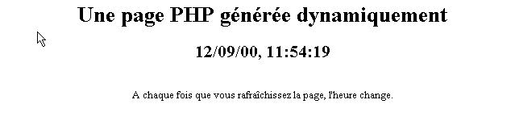
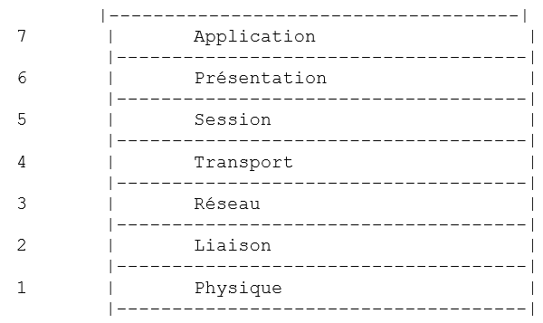
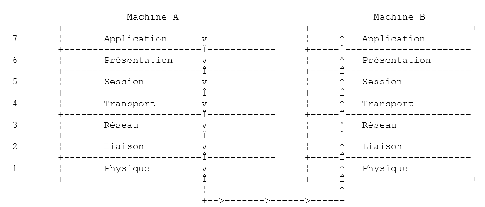
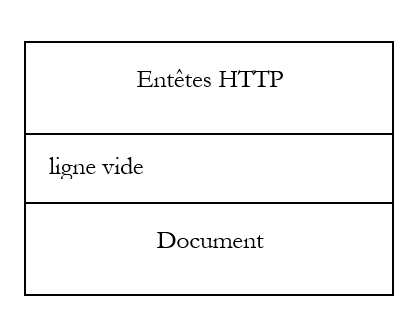
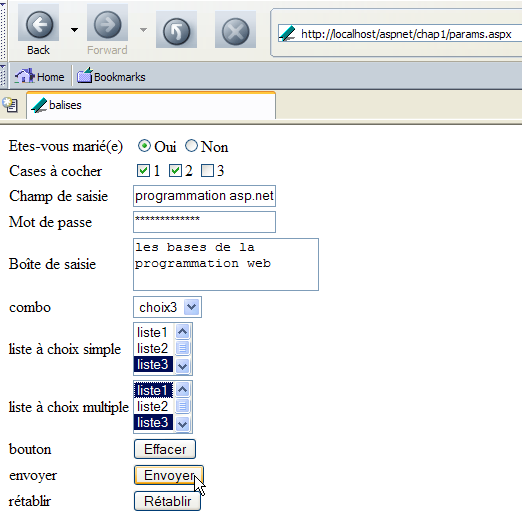
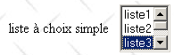

2. Noções básicas
Neste capítulo, apresentamos os fundamentos da programação Web. O seu objetivo principal é dar a conhecer os grandes princípios da programação Web, que são independentes da tecnologia específica utilizada para os implementar. Apresenta numerosos exemplos que se recomenda testar, a fim de «assimilar» gradualmente a filosofia do desenvolvimento Web. As ferramentas gratuitas necessárias para os testes são apresentadas no final do documento, no anexo intitulado «As ferramentas da Web».
2.1. Os componentes de uma aplicação Web
Machine Serveur

15Cliente
Número | Função | Exemplos comuns |
OS Servidor | Linux, Windows | |
Servidor Web | Apache (Linux, Windows) IIS (NT), PWS (Win9x), Cassini (Windows + plataforma .NET) | |
Scripts executados no lado do servidor. Podem ser executados por módulos do servidor ou por programas externos ao servidor (CGI). | PERL (Apache, IIS, PWS) VBSCRIPT (IIS, PWS) JAVASCRIPT (IIS, PWS) PHP (Apache, IIS, PWS) JAVA (Apache, IIS, PWS) C#, VB.NET (IIS) | |
Base de dados — Esta pode estar na mesma máquina que o programa que a utiliza ou noutra máquina através da Internet. | Oracle (Linux, Windows) MySQL (Linux, Windows) Postgres (Linux, Windows) Access (Windows) SQL Server (Windows) | |
OS Cliente | Linux, Windows | |
Navegador da Web | Netscape, Internet Explorer, Mozilla, Opera | |
Scripts executados no lado do cliente, no próprio navegador. Estes scripts não têm qualquer acesso aos discos do computador do cliente. | VBscript (IE) JavaScript (IE, Netscape) PerlScript (IE) Applets JAVA |
2.2. A troca de dados numa aplicação web com formulário

Máquina do cliente Máquina do servidor
Número | Função |
O navegador solicita um URL pela primeira vez (http://machine/url). Não foi passado nenhum parâmetro. | |
O servidor Web envia-lhe a página Web correspondente a este URL. Esta pode ser estática ou gerada dinamicamente por um script de servidor (SA) que pode ter utilizado o conteúdo de bases de dados (SB, SC). Neste caso, o script detetará que o URL foi solicitado sem a passagem de parâmetros e irá gerar a página inicial WEB. O navegador recebe a página e exibe-a (CA). Os scripts do lado do navegador (CB) podem ter alterado a página inicial enviada pelo servidor. Posteriormente, através de interações entre o utilizador (CD) e os scripts (CB), a página Web será alterada. Em particular, os formulários serão preenchidos. | |
O utilizador valida os dados do formulário, que devem então ser enviados para o servidor web. O navegador volta a solicitar o URL inicial ou outro, conforme o caso, e transmite simultaneamente ao servidor os valores do formulário. Para tal, pode utilizar dois métodos denominados GET e POST. Ao receber o pedido do cliente, o servidor executa o script (SA) associado ao URL solicitado, script esse que irá detetar os parâmetros e processá-los. | |
O servidor fornece a página WEB criada pelo programa (SA, SB, SC). Esta etapa é idêntica à etapa 2 anterior. As trocas de dados realizam-se agora de acordo com as etapas 2 e 3. |
2.3. Notations
A seguir, partiremos do princípio de que foram instaladas várias ferramentas e adotaremos as seguintes notações:
notação | significado |
raiz da árvore de diretórios do servidor Apache | |
raiz das páginas Web servidas pelo Apache. É nesta raiz que as páginas Web devem estar localizadas. Assim, o URL http://localhost/page1.htm corresponde ao ficheiro <apache-DocumentRoot>\page1.htm. | |
raiz da árvore de diretórios associada ao alias cgi-bin e onde é possível colocar scripts CGI para o Apache. Assim, o URL http://localhost/cgi-bin/test1.pl corresponde ao ficheiro <apache-cgi-bin>\test1.pl. | |
raiz das páginas Web geradas pelo IIS, PWS ou Cassini. É nesta raiz que as páginas Web devem estar localizadas. Assim, o URL http://localhost/page1.htm corresponde ao ficheiro <IIS-DocumentRoot>\page1.htm. | |
raiz da árvore de diretórios da linguagem Perl. O executável perl.exe encontra-se geralmente em <perl>\bin. | |
raiz da árvore da linguagem PHP. O executável php.exe encontra-se geralmente em <php>. | |
raiz da árvore de diretórios do Java. Os executáveis relacionados com o Java encontram-se em <java>\bin. | |
raiz do servidor Tomcat. Encontram-se exemplos de servlets em <tomcat>\webapps\examples\servlets e exemplos de páginas em JSP, em <tomcat>\webbapps\examples\jsp |
Para cada uma destas ferramentas, consulte o anexo, que fornece orientações para a sua instalação.
2.4. Páginas Web estáticas, Páginas Web dinâmicas
Uma página estática é representada por um ficheiro HTML. Uma página dinâmica, por sua vez, é gerada «em tempo real» pelo servidor Web. Neste parágrafo, apresentamos vários testes com diferentes servidores web e diferentes linguagens de programação, a fim de demonstrar a universalidade do conceito web. Utilizaremos dois servidores web denominados Apache e IIS. Embora o IIS seja um produto comercial, existe também em duas versões mais limitadas, mas gratuitas:
- PWS para máquinas Win9x
- Cassini para máquinas Windows 2000 e XP
A pasta <IIS-DocumentRoot> é normalmente a pasta [lecteur:\inetpub\wwwroot], em que [lecteur] é a unidade (C, D, ...) onde foi instalado o IIS. O mesmo se aplica ao PWS. No caso do Cassini, a pasta <IIS-DocumentRoot> depende da forma como o servidor foi iniciado. No anexo, é mostrado que o servidor Cassini pode ser iniciado numa janela do DOS (ou através de um atalho) da seguinte forma:
A aplicação [WebServer], também conhecida como servidor web Cassini, aceita três parâmetros:
- /port: número da porta do serviço web. Pode ser qualquer valor. Por predefinição, o valor é 80
- /path: caminho físico de uma pasta no disco
- /vpath: pasta virtual associada à pasta física anterior. É importante ter em atenção que a sintaxe não é /path=caminho, mas sim /vpath:caminho, ao contrário do que indica o painel de ajuda acima.
Se o Cassini for iniciado da seguinte forma:
então a pasta P é a raiz da árvore web do servidor Cassini. É, portanto, esta pasta que é designada por <IIS-DocumentRoot>. Assim, no exemplo seguinte:
o servidor Cassini funcionará na porta 80 e a raiz da sua árvore de diretórios <IIS-DocumentRoot> é a pasta [d:\data\devel\webmatrix]. As páginas Web a testar devem estar localizadas nesta raiz.
Daqui em diante, cada aplicação web será representada por um único ficheiro que poderá ser criado com qualquer ficheiro de texto. Não é necessário qualquer ficheiro IDE.
2.4.1. Página estática HTML (Linguagem de Marcação HyperText)
Consideremos o seguinte código HTML:
<html>
<head>
<title>essai 1 : une page statique</title>
</head>
<body>
<center>
<h1>Une page statique...</h1>
</body>
</html>
que gera a seguinte página web:
Os testes

Teste1
- iniciar o servidor Apache
- colocar o script essai1.html em <apache-DocumentRoot>
- visualizar o URL http://localhost/essai1.html num navegador
- Parar o servidor Apache
Teste 2
- iniciar o servidor IIS/PWS/Cassini
- colocar o script essai1.html no <IIS-DocumentRoot>
- visualizar o URL http://localhost/essai1.html com um navegador
2.4.2. Uma página ASP (Active Server Pages)
O script essai2.asp:
<html>
<head>
<title>essai 1 : une page asp</title>
</head>
<body>
<center>
<h1>Une page asp générée dynamiquement par le serveur PWS</h1>
<h2>Il est <% =time %></h2>
<br>
A chaque fois que vous rafraîchissez la page, l'heure change.
</body>
</html>
gera a seguinte página web:

O teste
- iniciar o servidor IIS/PWS
- colocar o script essai2.asp em <IIS-DocumentRoot>
- aceder a URL http://localhost/essai2.asp com um navegador
2.4.3. Um script PERL (Practical Extracting and Reporting Language)
O script essai3.pl:
#!d:\perl\bin\perl.exe
($secondes,$minutes,$heure)=localtime(time);
print <<HTML
Content-type: text/html
<html>
<head>
<title>essai 1 : un script Perl</title>
</head>
<body>
<center>
<h1>Une page générée dynamiquement par un script Perl</h1>
<h2>Il est $heure:$minutes:$secondes</h2>
<br>
A chaque fois que vous rafraîchissez la page, l'heure change.
</body>
</html>
HTML
;
A primeira linha é o caminho do executável perl.exe. Deve ser adaptado, se necessário. Uma vez executado por um servidor Web, o script gera a seguinte página:

O teste
- servidor Web: Apache
- Para mais informações, consulte o ficheiro de configuração srm.conf ou httpd.conf, consoante a versão do Apache, em <apache>\confs e procure a linha que refere o cgi-bin para saber qual é o diretório <apache-cgi-bin> onde deve colocar o ficheiro essai3.pl.
- Coloque o script essai3.pl no <apache-cgi-bin>
- acceda ao URL http://localhost/cgi-bin/essai3.pl
Note-se que demora mais tempo a carregar a página perl do que a página asp. Isto deve-se ao facto de o script Perl ser executado por um interpretador Perl que tem de ser carregado antes de poder executar o script. Este não permanece permanentemente na memória.
2.4.4. Um script PHP (Processador HyperText)
O script essai4.php
<html>
<head>
<title>essai 4 : une page php</title>
</head>
<body>
<center>
<h1>Une page PHP générée dynamiquement</h1>
<h2>
<?
$maintenant=time();
echo date("j/m/y, h:i:s",$maintenant);
?>
</h2>
<br>
A chaque fois que vous rafraîchissez la page, l'heure change.
</body>
</html>
O script anterior gera a seguinte página web:

Os testes
Teste 1
- Consulte o ficheiro de configuração srm.conf ou httpd.conf do Apache em <Apache>\confs
- A título informativo, verificar as linhas de configuração de php
- Inicie o servidor Apache
- colocar o essai4.php no <apache-DocumentRoot>
- aceder ao URL através de http://localhost/essai4.php
Teste2
- iniciar o servidor IIS/PWS
- A título informativo, verificar a configuração do PWS no que diz respeito ao PHP
- colocar o essai4.php no <IIS-DocumentRoot>\php
- solicitar o URL http://localhost/essai4.php
2.4.5. Um script JSP (Java Server Pages)
O script heure.jsp
<% //programa Java que exibe a hora %>
<%@ page import="java.util.*" %>
<%
// código JAVA para calcular a hora
Calendar calendrier=Calendar.getInstance();
int heures=calendrier.get(Calendar.HOUR_OF_DAY);
int minutes=calendrier.get(Calendar.MINUTE);
int secondes=calendrier.get(Calendar.SECOND);
// horas, minutos e segundos são variáveis globais
// que poderão ser utilizadas no código HTML
%>
<% // código HTML %>
<html>
<head>
<title>Page JSP affichant l'heure</title>
</head>
<body>
<center>
<h1>Une page JSP générée dynamiquement</h1>
<h2>Il est <%=heures%>:<%=minutes%>:<%=secondes%></h2>
<br>
<h3>A chaque fois que vous rechargez la page, l'heure change</h3>
</body>
</html>
Depois de executado pelo servidor web, este script gera a seguinte página:

Os testes
- colocar o script heure.jsp em <tomcat>\jakarta-tomcat\webapps\examples\jsp (Tomcat 3.x) ou em <tomcat>\webapps\examples\jsp (Tomcat 4.x)
- Inicie o servidor Tomcat
- aceder à página URL http://localhost:8080/examples/jsp/heure.jsp
2.4.6. Uma página ASP.NET
O script heure1.aspx:
<html>
<head>
<title>Démo asp.net </title>
</head>
<body>
Il est <% =Date.Now.ToString("hh:mm:ss") %>
</body>
</html>
Depois de executado pelo servidor web, este script gera a seguinte página:

Este teste requer uma máquina Windows na qual a plataforma .NET tenha sido instalada (ver anexo).
- Colocar o script heure1.aspx em <IIS-DocumentRoot>
- Inicie o servidor IIS/CASSINI
- solicitar o URL http://localhost/heure1.aspx
2.4.7. Conclusão
Os exemplos anteriores demonstraram que:
- uma página HTML pode ser gerada dinamicamente por um programa. É esse o sentido da programação Web.
- que as linguagens e os servidores Web utilizados podem ser diversos. Atualmente, observam-se as seguintes grandes tendências:
- as combinações Apache/PHP (Windows, Linux) e IIS/PHP (Windows)
- a tecnologia ASP.NET nas plataformas Windows, que associam o servidor IIS a uma linguagem .NET (C#, VB.NET, ...)
- a tecnologia de servlets Java e páginas JSP que funcionam com diferentes servidores (Tomcat, Apache, IIS) e em diferentes plataformas (Windows, Linux).
2.5. Scripts do lado do navegador
Uma página HTML pode conter scripts que serão executados pelo navegador. Existem inúmeras linguagens de script do lado do navegador. Aqui estão algumas delas:
Linguagem | Navegadores compatíveis |
VBScript | IE |
JavaScript | IE, Netscape |
PerlScript | IE |
Java | IE, Netscape |
Vejamos alguns exemplos.
2.5.1. Uma página Web com um script VBScript, do lado do navegador
A página vbs1.html
<html>
<head>
<title>essai : une page web avec un script vb</title>
<script language="vbscript">
function reagir
alert "Vous avez cliqué sur le bouton OK"
end function
</script>
</head>
<body>
<center>
<h1>Une page Web avec un script VB</h1>
<table>
<tr>
<td>Cliquez sur le bouton</td>
<td><input type="button" value="OK" name="cmdOK" onclick="reagir"></td>
</tr>
</table>
</body>
</html>
A página HTML acima não contém apenas o código HTML, mas também um programa destinado a ser executado pelo navegador que carregar esta página. O código é o seguinte:
<script language="vbscript">
function reagir
alert "Vous avez cliqué sur le bouton OK"
end function
</script>
As balizas <script></script> servem para delimitar os scripts na página HTML. Estes scripts podem ser escritos em diferentes linguagens e é a opção language da baliza <script> que indica a linguagem utilizada. Neste caso, é VBScript. Não iremos aprofundar esta linguagem. O script acima define uma função chamada réagir que exibe uma mensagem. Quando é que esta função é chamada? É a seguinte linha de código HTML que nos indica isso:
O atributo onclick indica o nome da função a ser chamada quando o utilizador clicar no botão OK. Quando o navegador tiver carregado esta página e o utilizador clicar no botão OK, será apresentada a seguinte página:

Os testes
Apenas o navegador IE é capaz de executar scripts VBScript. O Netscape necessita de complementos de software para o fazer. Poderão ser realizados os seguintes testes:
- servidor Apache
- script vbs1.html no <apache-DocumentRoot>
-
aceder à URL http://localhost/vbs1.html com o navegador IE
-
servidor IIS/PWS
- script vbs1.html em <pws-DocumentRoot>
- solicitar a URL http://localhost/vbs1.html com o navegador IE
Uma página Web com um script JavaScript, do lado do navegador
La page : js1.html
<html>
<head>
<title>essai 4 : une page web avec un script Javascript</title>
<script language="javascript">
function reagir(){
alert ("Vous avez cliqué sur le bouton OK");
}
</script>
</head>
<body>
<center>
<h1>Une page Web avec un script Javascript</h1>
<table>
<tr>
<td>Cliquez sur le bouton</td>
<td><input type="button" value="OK" name="cmdOK" onclick="reagir()"></td>
</tr>
</table>
</body>
</html>
Temos aqui algo idêntico à página anterior, com a diferença de que substituímos a linguagem VBScript pela linguagem JavaScript. Esta tem a vantagem de ser aceite pelos dois navegadores, o IE e o Netscape. A sua execução produz os mesmos resultados:

Os testes
- servidor Apache
- script js1.html no <apache-DocumentRoot>
-
aceder à URL http://localhost/js1.html com o navegador IE ou Netscape
-
servidor IIS/PWS
- script js1.html no <pws-DocumentRoot>
- aceder à URL http://localhost/js1.html com o navegador IE ou Netscape
2.6. As interações cliente-servidor
Voltemos ao nosso esquema inicial, que ilustrava os intervenientes de uma aplicação web:

Máquina Servidor
Aqui, estamos interessados nas trocas entre a máquina cliente e a máquina servidor. Estas ocorrem através de uma rede e é importante recordar a estrutura geral das trocas entre duas máquinas remotas.
2.6.1. O modelo OSI
O modelo de rede aberta denominado OSI (Open Systems Interconnection Reference Model), definido pela ISO (Organização Internacional de Normalização), descreve uma rede ideal onde a comunicação entre máquinas pode ser representada por um modelo de sete camadas:

Cada camada recebe serviços da camada inferior e fornece os seus à camada superior. Suponhamos que duas aplicações localizadas em máquinas A e B diferentes pretendem comunicar: fazem-no ao nível da camada Application. Não precisam de conhecer todos os detalhes do funcionamento da rede: cada aplicação entrega a informação que pretende transmitir à camada inferior: a camada Présentation. A aplicação só precisa, portanto, de conhecer as regras de interface com a camada Présentation. Assim que a informação chega à camada Présentation, é encaminhada, de acordo com outras regras, para a camada Session e assim sucessivamente, até que a informação chegue ao suporte físico e seja transmitida fisicamente para a máquina de destino. Aí, será submetida ao processo inverso ao que sofreu na máquina remetente.
Em cada camada, o processo remetente encarregado de enviar a informação transmite-a a um processo recetor na outra máquina, pertencente à mesma camada que ele. Faz-o de acordo com determinadas regras a que se chama protocolo da camada. Temos, portanto, o seguinte esquema de comunicação final:

A função das diferentes camadas é a seguinte:
Assegura a transmissão de bits num suporte físico. Nesta camada encontram-se equipamentos terminais de processamento de dados (E.T.T.D.), tais como terminais ou computadores, bem como equipamentos de terminação de circuitos de dados (E.T.C.D.), tais como moduladores/demoduladores, multiplexadores e concentradores. Os pontos de interesse a este nível são: . a escolha da codificação da informação (analógica ou digital) . a escolha do modo de transmissão (síncrono ou assíncrono). | |
Oculta as características físicas da camada Física. Deteta e corrige os erros de transmissão. | |
Gere o percurso que as informações enviadas pela rede devem seguir. A isto chama-se routage: determinar o percurso que uma informação deve seguir para chegar ao seu destinatário. | |
Permite a comunicação entre duas aplicações, enquanto as camadas anteriores apenas permitiam a comunicação entre máquinas. Um serviço prestado por esta camada pode ser o multiplexamento: a camada de transporte poderá utilizar uma mesma ligação de rede (de máquina para máquina) para transmitir informações pertencentes a várias aplicações. | |
Nesta camada, encontramos serviços que permitem a uma aplicação abrir e manter uma sessão de trabalho numa máquina remota. | |
O seu objetivo é uniformizar a representação dos dados nas diferentes máquinas. Assim, os dados provenientes de uma máquina A serão «formatados» pela camada Présentation da máquina A, de acordo com um formato padrão, antes de serem enviados pela rede. Ao chegarem à camada Présentation da máquina destinatária B, que as reconhecerá graças ao seu formato padrão, serão formatadas de outra forma para que a aplicação da máquina B as reconheça. | |
Nesta fase, encontram-se as aplicações geralmente mais próximas do utilizador, tais como o correio eletrónico ou a transferência de ficheiros. |
2.6.2. O modelo TCP/IP
O modelo OSI é um modelo ideal. O conjunto de protocolos TCP/IP aproxima-se deste modelo da seguinte forma:

- a interface de rede (a placa de rede do computador) assegura as funções das camadas 1 e 2 do modelo OSI
- a camada IP (Protocolo de Internet) desempenha as funções da camada 3 (rede)
- a camada TCP (Protocolo de Controlo de Transferência) ou UDP (Protocolo de Datagrama do Utilizador) desempenha as funções da camada 4 (transporte). O protocolo TCP garante que os pacotes de dados trocados entre os computadores cheguem corretamente ao destino. Caso contrário, reenvia os pacotes que se perderam. O protocolo UDP não desempenha essa função, cabendo ao programador de aplicações fazê-lo. É por isso que, na Internet — que não é uma rede 100% fiável —, o protocolo TCP é o mais utilizado. Fala-se, então, de rede TCP-IP.
- A camada de Aplicação abrange as funções dos níveis 5 a 7 do modelo OSI.
As aplicações web encontram-se na camada Application e baseiam-se, portanto, nos protocolos TCP-IP. As camadas Application das máquinas cliente e servidor trocam mensagens que são confiadas às camadas 1 a 4 do modelo para serem encaminhadas para o destino. Para se compreenderem, as camadas de aplicação de ambas as máquinas têm de «falar» a mesma linguagem ou protocolo. O protocolo das aplicações Web chama-se HTTP (HyperText Transfer Protocol). Trata-se de um protocolo de tipo texto, c.a.d, em que as máquinas trocam linhas de texto na rede para se compreenderem. Essas trocas são padronizadas, c.a.d, de modo que o cliente dispõe de um determinado conjunto de mensagens para indicar exatamente o que pretende ao servidor e este, por sua vez, dispõe igualmente de um determinado conjunto de mensagens para dar a sua resposta ao cliente. Esta troca de mensagens tem a seguinte forma:

Cliente --> Servidor
Quando o cliente faz o seu pedido ao servidor web, envia
- linhas de texto no formato HTTP para indicar o que pretende
- uma linha em branco
- opcionalmente, um documento
Servidor --> Cliente
Quando o servidor responde ao cliente, envia
- linhas de texto no formato HTTP para indicar o que está a enviar
- uma linha vazia
- opcionalmente, um documento
As trocas têm, portanto, o mesmo formato em ambos os sentidos. Em ambos os casos, pode haver o envio de um documento, embora seja raro um cliente enviar um documento ao servidor. Mas o protocolo HTTP prevê essa possibilidade. É isso que permite, por exemplo, que os assinantes de um fornecedor de acesso descarreguem diversos documentos para o seu site pessoal alojado nesse fornecedor de acesso. Os documentos trocados podem ser quaisquer. Tomemos como exemplo um navegador que solicita uma página web contendo imagens:
- o navegador liga-se ao servidor web e solicita a página que pretende. Os recursos solicitados são identificados de forma única por meio de URL (Uniform Resource Locator). O navegador envia apenas cabeçalhos HTTP e nenhum documento.
- O servidor responde-lhe. Em primeiro lugar, envia cabeçalhos HTTP indicando o tipo de resposta que está a enviar. Pode tratar-se de um erro se a página solicitada não existir. Se a página existir, o servidor indicará nos cabeçalhos HTTP da sua resposta que, após estes, irá enviar um documento HTML (HyperText Markup Language). Este documento é uma sequência de linhas de texto no formato HTML. Um texto HTML contém balizas (marcadores) que fornecem ao navegador instruções sobre a forma de apresentar o texto.
- O cliente sabe, com base nos cabeçalhos HTTP do servidor, que vai receber um documento HTML. Irá analisar esse documento e talvez perceba que este contém referências a imagens. Estas imagens não se encontram no documento HTML. Por isso, faz um novo pedido ao mesmo servidor web para solicitar a primeira imagem de que necessita. Este pedido é idêntico ao feito no ponto 1, exceto que o recurso solicitado é diferente. O servidor irá processar esta solicitação, enviando ao seu cliente a imagem solicitada. Desta vez, na sua resposta, os cabeçalhos HTTP especificarão que o documento enviado é uma imagem e não um documento HTML.
- O cliente recebe a imagem enviada. Os passos 3 e 4 serão repetidos até que o cliente (geralmente um navegador) tenha todos os documentos necessários para apresentar a página na íntegra.
2.6.3. O protocolo HTTP
Vamos explorar o protocolo HTTP através de exemplos. O que é que um navegador e um servidor web trocam entre si?
2.6.3.1. A resposta de um servidor HTTP
Vamos descobrir aqui como um servidor web responde aos pedidos dos seus clientes. O serviço Web ou serviço HTTP é um serviço TCP-IP que funciona normalmente na porta 80. Pode funcionar noutra porta. Nesse caso, o navegador do cliente teria de especificar essa porta no URL que solicita. Um URL tem o seguinte formato geral:
com
protocolo | http para o serviço web. Um navegador também pode funcionar como cliente de serviços ftp, news, telnet, etc. |
máquina | nome da máquina onde o serviço web está a funcionar |
porta | porta do serviço web. Se for 80, pode omitir-se o número da porta. Este é o caso mais frequente |
caminho | caminho que indica o recurso solicitado |
informações | informações adicionais fornecidas ao servidor para especificar o pedido do cliente |
O que faz um navegador quando um utilizador solicita o carregamento de um URL?
- Ele estabelece uma comunicação TCP-IP com a máquina e a porta indicadas na parte «machine[:port]» do URL. Estabelecer uma comunicação TCP-IP significa criar um «canal» de comunicação entre duas máquinas. Uma vez criado esse canal, todas as informações trocadas entre as duas máquinas passarão por ele. A criação deste canal TCP-IP ainda não envolve o protocolo Web HTTP.
- Uma vez criado o canal TCP-IP, o cliente enviará o seu pedido ao servidor Web, enviando-lhe linhas de texto (comandos) no formato HTTP. Enviará ao servidor a parte «caminho/informações» do URL
- o servidor responderá da mesma forma e no mesmo canal
- um dos dois parceiros tomará a decisão de encerrar o canal. Isso depende do protocolo HTTP utilizado. Com o protocolo HTTP 1.0, o servidor encerra a ligação após cada uma das suas respostas. Isto obriga um cliente que precise de efetuar várias solicitações para obter os diferentes documentos que constituem uma página web a abrir uma nova ligação em cada solicitação, o que acarreta um custo. Com o protocolo HTTP/1.1, o cliente pode indicar ao servidor para manter a ligação aberta até que lhe peça para a encerrar. Assim, pode recuperar todos os documentos de uma página web com uma única ligação e encerrar ele próprio a ligação assim que o último documento for obtido. O servidor detetará este encerramento e também encerrará a ligação.
Para explorar as trocas de dados entre um cliente e um servidor web, vamos utilizar uma ferramenta chamada curl. O curl é uma aplicação DOS que permite atuar como cliente de serviços da Internet que suportam diferentes protocolos (HTTP, FTP, TELNET, GOPHER, ...). O curl está disponível no URL http://curl.haxx.se/. Aqui, é preferível descarregar a versão Windows win32-nossl, uma vez que a versão win32-ssl requer DLLs adicionais que não estão incluídas no pacote do curl. Este pacote contém um conjunto de ficheiros que basta descompactar numa pasta a que, doravante, chamaremos <curl>. Esta pasta contém um executável chamado [curl.exe]. Este será o nosso cliente para consultar servidores web. Abramos uma janela do DOS e acedamos à pasta <curl>:
dos>dir curl.exe
22/03/2004 13:29 299 008 curl.exe
E:\curl2>curl
curl: try 'curl --help' for more information
dos>curl --help | more
Usage: curl [options...] <url>
Options: (H) means HTTP/HTTPS only, (F) means FTP only
-a/--append Append to target file when uploading (F)
-A/--user-agent <string> User-Agent to send to server (H)
--anyauth Tell curl to choose authentication method (H)
-b/--cookie <name=string/file> Cookie string or file to read cookies from (H)
--basic Enable HTTP Basic Authentication (H)
-B/--use-ascii Use ASCII/text transfer
-c/--cookie-jar <file> Write cookies to this file after operation (H)
....
Vamos utilizar esta aplicação para interagir com um servidor web e descobrir as trocas de dados entre o cliente e o servidor. Estaremos na seguinte situação:

O servidor web pode ser qualquer um. O nosso objetivo aqui é descobrir as trocas de dados que irão ocorrer entre o cliente web curl e o servidor web. Anteriormente, criámos a seguinte página estática HTML:
<html>
<head>
<title>essai 1 : une page statique</title>
</head>
<body>
<center>
<h1>Une page statique...</h1>
</body>
</html>
que visualizamos num navegador:

Vemos que o URL solicitado é: http://localhost/aspnet/chap1/statique1.html. O servidor do serviço web é, portanto, localhost (=servidor local) e a porta 80. Se solicitarmos a visualização do texto HTML desta página web (Exibir/Fonte), encontramos o texto HTML inicialmente criado:

Agora, vamos utilizar o nosso cliente CURL para solicitar o mesmo URL:
dos>curl http://localhost/aspnet/chap1/statique1.html
<html>
<head>
<title>essai 1 : une page statique</title>
</head>
<body>
<center>
<h1>Une page statique...</h1>
</body>
</html>
Vemos que o servidor web lhe enviou um conjunto de linhas de texto que representam o código HTML da página solicitada. Referimos anteriormente que a resposta de um servidor web assumia a seguinte forma:

No entanto, aqui não vimos os cabeçalhos HTTP. Isto porque, por predefinição, o [curl] não os apresenta. A opção --include permite apresentá-los:
E:\curl2>curl --include http://localhost/aspnet/capítulo1/statique1.html
HTTP/1.1 200 OK
Server: Microsoft ASP.NET Web Matrix Server/0.6.0.0
Date: Mon, 22 Mar 2004 16:51:00 GMT
X-AspNet-Version: 1.1.4322
Cache-Control: public
ETag: "1C4102CEE8C6400:1C4102CFBBE2250"
Content-Type: text/html
Content-Length: 161
Connection: Close
<html>
<head>
<title>essai 1 : une page statique</title>
</head>
<body>
<center>
<h1>Une page statique...</h1>
</body>
</html>
O servidor enviou efetivamente uma série de cabeçalhos HTTP, seguida de uma linha em branco:
HTTP/1.1 200 OK
Server: Microsoft ASP.NET Web Matrix Server/0.6.0.0
Date: Mon, 22 Mar 2004 16:51:00 GMT
X-AspNet-Version: 1.1.4322
Cache-Control: public
ETag: "1C4102CEE8C6400:1C4102CFBBE2250"
Content-Type: text/html
Content-Length: 161
Connection: Close
o servidor indica
| |
o servidor identifica-se. Neste caso, trata-se de um servidor Cassini | |
a data/hora da resposta | |
cabeçalho específico do servidor Cassini | |
fornece indicações ao cliente sobre a possibilidade de armazenar em cache a resposta que lhe é enviada. O atributo [public] indica ao cliente que pode armazenar a página em cache. Um atributo [no-cache] teria indicado ao cliente que não deveria armazenar a página em cache. | |
... | |
o servidor indica que vai enviar texto (text) no formato HTML (html). | |
número de bytes do documento que será enviado após os cabeçalhos HTTP. Este número corresponde, na verdade, ao tamanho em bytes do ficheiro essai1.html: | |
o servidor indica que encerrará a ligação assim que o documento for enviado |
O cliente recebe estes cabeçalhos HTTP e sabe agora que vai receber 161 octetos que representam um documento HTML. O servidor envia estes 161 octetos imediatamente a seguir à linha em branco que assinalava o fim dos cabeçalhos HTTP:
<html>
<head>
<title>essai 1 : une page statique</title>
</head>
<body>
<center>
<h1>Une page statique...</h1>
</body>
</html>
Reconhece-se aqui o ficheiro HTML criado inicialmente. Se o nosso cliente fosse um navegador, após receber estas linhas de texto, interpretá-las-ia para apresentar ao utilizador, através do teclado, a seguinte página:
Vamos utilizar novamente o nosso cliente [curl] para solicitar o mesmo recurso, mas desta vez pedindo apenas os cabeçalhos da resposta:
dos>curl --head http://localhost/aspnet/chap1/statique1.html
HTTP/1.1 200 OK
Server: Microsoft ASP.NET Web Matrix Server/0.6.0.0
Date: Tue, 23 Mar 2004 07:11:54 GMT
Cache-Control: public
ETag: "1C410A504D60680:1C410A58621AD3E"
Content-Type: text/html
Content-Length: 161
Connection: Close
Obtenemos o mesmo resultado que anteriormente, sem o documento HTML. Agora, vamos solicitar uma imagem tanto com um navegador como com o cliente genérico TCP. Primeiro, com um navegador:

O ficheiro univ01.gif tem 4052 octetos:
Vamos agora utilizar o cliente [curl]:
dos>curl --head http://localhost/aspnet/chap1/univ01.gif
HTTP/1.1 200 OK
Server: Microsoft ASP.NET Web Matrix Server/0.6.0.0
Date: Tue, 23 Mar 2004 07:18:44 GMT
Cache-Control: public
ETag: "1C410A6795D7500:1C410A6868B1476"
Content-Type: image/gif
Content-Length: 4052
Connection: Close
É de salientar os seguintes pontos no ciclo de pedido-resposta acima:
| |
| |
|
2.6.3.2. O pedido de um cliente HTTP
Agora, coloquemos a seguinte questão: se quisermos escrever um programa que «comunique» com um servidor web, que comandos deve este enviar ao servidor web para obter um determinado recurso? Nos exemplos anteriores, vimos o que o cliente recebia, mas não o que o cliente enviava. Vamos utilizar a opção [--verbose] do curl para ver também o que o cliente envia ao servidor. Comecemos por solicitar a página estática:
dos>curl --verbose http://localhost/aspnet/chap1/statique1.html
* About to connect() to localhost:80
* Connected to portable1_tahe (127.0.0.1) port 80
> GET /aspnet/chap1/statique1.html HTTP/1.1
User-Agent: curl/7.10.8 (win32) libcurl/7.10.8 OpenSSL/0.9.7a zlib/1.1.4
Host: localhost
Pragma: no-cache
Accept: image/gif, image/x-xbitmap, image/jpeg, image/pjpeg, */*
< HTTP/1.1 200 OK
< Server: Microsoft ASP.NET Web Matrix Server/0.6.0.0
< Date: Tue, 23 Mar 2004 07:37:06 GMT
< Cache-Control: public
< ETag: "1C410A504D60680:1C410A58621AD3E"
< Content-Type: text/html
< Content-Length: 161
< Connection: Close
<html>
<head>
<title>essai 1 : une page statique</title>
</head>
<body>
<center>
<h1>Une page statique...</h1>
</body>
</html>
* Closing connection #0
Em primeiro lugar, o cliente [curl] estabelece uma ligação TCP/IP com a porta 80 do computador localhost (=127.0.0.1)
Assim que a ligação é estabelecida, o cliente envia o seu pedido HTTP. Trata-se de uma sequência de linhas de texto terminada por uma linha em branco:
GET /aspnet/chap1/statique1.html HTTP/1.1
User-Agent: curl/7.10.8 (win32) libcurl/7.10.8 OpenSSL/0.9.7a zlib/1.1.4
Host: localhost
Pragma: no-cache
Accept: image/gif, image/x-xbitmap, image/jpeg, image/pjpeg, */*
A solicitação HTTP de um cliente Web tem duas funções:
- indicar o recurso pretendido. É esta a função da primeira linha, GET
- fornecer informações sobre o cliente que efetua a solicitação, para que o servidor possa, eventualmente, adaptar a sua resposta a esse tipo específico de cliente.
O significado das linhas enviadas acima pelo cliente [curl] é o seguinte:
para solicitar um determinado recurso de acordo com uma determinada versão do protocolo HTTP. O servidor envia uma resposta no formato HTTP, seguida de uma linha vazia e, em seguida, do recurso solicitado | |
para indicar quem é o cliente | |
para especificar (protocolo HTTP 1.1) a máquina e a porta do servidor web consultado | |
aqui para especificar que o cliente não gere cache. | |
tipos MIME que especificam os tipos de ficheiros que o cliente consegue gerir |
Vamos repetir a operação com a opção --head do [curl]:
dos>curl --verbose --head --output reponse.txt http://localhost/aspnet/chap1/statique1.html
* About to connect() to localhost:80
* Connected to portable1_tahe (127.0.0.1) port 80
> HEAD /aspnet/chap1/statique1.html HTTP/1.1
User-Agent: curl/7.10.8 (win32) libcurl/7.10.8 OpenSSL/0.9.7a zlib/1.1.4
Host: localhost
Pragma: no-cache
Accept: image/gif, image/x-xbitmap, image/jpeg, image/pjpeg, */*
< HTTP/1.1 200 OK
< Server: Microsoft ASP.NET Web Matrix Server/0.6.0.0
< Date: Tue, 23 Mar 2004 07:54:22 GMT
< Cache-Control: public
< ETag: "1C410A504D60680:1C410A58621AD3E"
< Content-Type: text/html
< Content-Length: 161
< Connection: Close
Vamos concentrar-nos apenas nos cabeçalhos HTTP enviados pelo cliente:
HEAD /aspnet/chap1/statique1.html HTTP/1.1
User-Agent: curl/7.10.8 (win32) libcurl/7.10.8 OpenSSL/0.9.7a zlib/1.1.4
Host: localhost
Pragma: no-cache
Accept: image/gif, image/x-xbitmap, image/jpeg, image/pjpeg, */*
Apenas o comando que solicita o recurso foi alterado. Em vez de um comando GET, temos agora um comando HEAD. Este comando solicita que a resposta do servidor se limite aos cabeçalhos HTTP e que não envie o recurso solicitado. A captura de ecrã acima não mostra os cabeçalhos HTTP recebidos. Estes foram colocados num ficheiro devido à opção [--output reponse.txt] do comando [curl]:
dos>more reponse.txt
HTTP/1.1 200 OK
Server: Microsoft ASP.NET Web Matrix Server/0.6.0.0
Date: Tue, 23 Mar 2004 07:54:22 GMT
Cache-Control: public
ETag: "1C410A504D60680:1C410A58621AD3E"
Content-Type: text/html
Content-Length: 161
Connection: Close
2.6.4. Conclusão
Descobrimos a estrutura do pedido de um cliente web e a da resposta que lhe é dada pelo servidor web através de alguns exemplos. O diálogo é feito através do protocolo HTTP, um conjunto de comandos em formato de texto trocados entre as duas partes. O pedido do cliente e a resposta do servidor têm a seguinte estrutura:

No caso de um pedido (frequentemente denominado «solicitação») do cliente, a parte [Document] está, na maioria das vezes, ausente. No entanto, é possível que um cliente envie um documento para o servidor. Faz-o através de um comando denominado PUT. Os dois comandos habituais para solicitar um recurso são GET e POST. Este último será apresentado um pouco mais adiante. O comando HEAD permite solicitar apenas os cabeçalhos HTTP. Os comandos GET e POST são os mais utilizados pelos clientes web do tipo navegador.
A pedido de um cliente, o servidor envia uma resposta com a mesma estrutura. O recurso solicitado é transmitido na parte [Document], a menos que o comando do cliente tenha sido HEAD, caso em que apenas os cabeçalhos HTTP são enviados.
2.7. A linguagem HTML
Um navegador da Web pode apresentar vários documentos, sendo o mais comum o documento HTML (HyperText Markup Language). Trata-se de um texto formatado com balizas do tipo <balise>texte</balise>. Assim, o texto <B>important</B> apresentará o texto importante em negrito. Existem balizas isoladas, como a baliza <hr>, que apresenta uma linha horizontal. Não iremos analisar as balizas que podem ser encontradas num texto HTML. Existem inúmeros programas WYSIWYG que permitem criar uma página web sem escrever uma única linha de código HTML. Estas ferramentas geram automaticamente o código HTML a partir de um layout criado com o rato e controlos predefinidos. Assim, é possível inserir (com o rato) uma tabela na página e, em seguida, consultar o código HTML gerado pelo software para descobrir as balizas a utilizar para definir uma tabela numa página web. Não é mais complicado do que isso. Além disso, o conhecimento da linguagem HTML é indispensável, uma vez que as aplicações web dinâmicas têm de gerar elas próprias o código HTML a enviar aos clientes web. Este código é gerado por programa e é, naturalmente, necessário saber o que deve ser gerado para que o cliente tenha a página web que deseja.
Resumindo, não é necessário conhecer toda a linguagem HTML para começar a programar para a Web. No entanto, esse conhecimento é necessário e pode ser adquirido através da utilização de software WYSIWYG para a criação de páginas Web, como o Word, o FrontPage, o DreamWeaver e dezenas de outros. Outra forma de descobrir as subtilezas da linguagem HTML é navegar na Web e visualizar o código-fonte das páginas que apresentam características interessantes e ainda desconhecidas para si.
2.7.1. Um exemplo
Consideremos o exemplo seguinte, criado com o FrontPage Express, uma ferramenta gratuita incluída no Internet Explorer. O código gerado pelo FrontPage foi aqui simplificado. Este exemplo apresenta alguns elementos que podem ser encontrados num documento web, tais como:
- uma tabela
- uma imagem
- um link

Um documento HTML tem a seguinte estrutura geral:
Todo o documento é delimitado pelas balizas <html>...</html>. É composto por duas partes:
- <head>...</head>: esta é a parte não visível do documento. Fornece informações ao navegador que irá apresentar o documento. Nesta parte encontra-se frequentemente a baliza <title>...</title>, que define o texto a apresentar na barra de título do navegador. Também podem existir outras balizas, nomeadamente as que definem as palavras-chave do documento, palavras-chave posteriormente utilizadas pelos motores de busca. Nesta parte também podem encontrar-se scripts, na maioria das vezes escritos em JavaScript ou VBScript, que serão executados pelo navegador.
- <body atributos>...</body>: esta é a parte que será apresentada pelo navegador. As balizas HTML contidas nesta parte indicam ao navegador a forma visual «desejada» para o documento. Cada navegador interpretará estas balizas à sua maneira. Dois navegadores podem, assim, visualizar de forma diferente um mesmo documento web. Este é, geralmente, um dos desafios dos web designers.
O código HTML do nosso documento de exemplo é o seguinte:
<html>
<head>
<title>balises</title>
</head>
<body background="/images/standard.jpg">
<center>
<h1>Les balises HTML</h1>
<hr>
</center>
<table border="1">
<tr>
<td>cellule(1,1)</td>
<td valign="middle" align="center" width="150">cellule(1,2)</td>
<td>cellule(1,3)</td>
</tr>
<tr>
<td>cellule(2,1)</td>
<td>cellule(2,2)</td>
<td>cellule(2,3</td>
</tr>
</table>
<table border="0">
<tr>
<td>Une image</td>
<td><img border="0" src="/images/univ01.gif" width="80" height="95"></td>
</tr>
<tr>
<td>le site de l'ISTIA</td>
<td><a href="http://istia.univ-angers.fr">ici</a></td>
</tr>
</table>
</body>
</html>
No código, foram destacados apenas os pontos que nos interessam:
Elemento | etiquetas e exemplos HTML |
<title>balises</title> balises aparecerá na barra de título do navegador que exibirá o documento | |
<hr>: exibe uma linha horizontal | |
<atributos da tabela>....</table>: para definir a tabela <tr atributos>...</tr>: para definir uma linha <td atributos>...</td>: para definir uma célula exemplos: <table border="1">...</table>: o atributo border define a espessura da borda da tabela <td valign="middle" align="center" width="150">célula(1,2)</td>: define uma célula cujo conteúdo será célula(1,2). Este conteúdo será centrado verticalmente (valign="middle") e horizontalmente (align="center"). A célula terá uma largura de 150 píxeis (width="150") | |
<img border="0" src="/images/univ01.gif" width="80" height="95">: define uma imagem sem borda (border="0"), com 95 píxeis de altura (height="95"), com 80 píxeis de largura (width="80") e cujo ficheiro de origem é /images/univ01.gif no servidor web (src="/images/univ01.gif"). Esta ligação encontra-se num documento web que foi obtido com o URL http://localhost:81/html/balises.htm. Assim, o navegador irá solicitar o URL http://localhost:81/images/univ01.gif para obter a imagem aqui referenciada. | |
<a href="http://istia.univ-angers.fr">aqui</a>: faz com que o texto ici funcione como um link para o URL http://istia.univ-angers.fr. | |
<body background="/images/standard.jpg">: indica que a imagem que deve servir de fundo da página se encontra em URL /images/standard.jpg no servidor web. No contexto do nosso exemplo, o navegador irá solicitar o URL http://localhost:81/images/standard.jpg para obter esta imagem de fundo. |
Neste exemplo simples, vemos que, para construir o documento na íntegra, o navegador tem de efetuar três pedidos ao servidor:
- http://localhost:81/html/balises.htm para obter o código-fonte HTML do documento
- http://localhost:81/images/univ01.gif para obter a imagem univ01.gif
- http://localhost:81/images/standard.jpg para obter a imagem de fundo standard.jpg
O exemplo seguinte apresenta um formulário Web também criado com FrontPage.

O código HTML gerado pelo FrontPage e ligeiramente simplificado é o seguinte:
<html>
<head>
<title>balises</title>
<script language="JavaScript">
function effacer(){
alert("Vous avez cliqué sur le bouton Effacer");
}//apagar
</script>
</head>
<body background="/images/standard.jpg">
<form method="POST" >
<table border="0">
<tr>
<td>Etes-vous marié(e)</td>
<td>
<input type="radio" value="Oui" name="R1">Oui
<input type="radio" name="R1" value="non" checked>Non
</td>
</tr>
<tr>
<td>Cases à cocher</td>
<td>
<input type="checkbox" name="C1" value="un">1
<input type="checkbox" name="C2" value="deux" checked>2
<input type="checkbox" name="C3" value="trois">3
</td>
</tr>
<tr>
<td>Champ de saisie</td>
<td>
<input type="text" name="txtSaisie" size="20" value="qqs mots">
</td>
</tr>
<tr>
<td>Mot de passe</td>
<td>
<input type="password" name="txtMdp" size="20" value="unMotDePasse">
</td>
</tr>
<tr>
<td>Boîte de saisie</td>
<td>
<textarea rows="2" name="areaSaisie" cols="20">
ligne1
ligne2
ligne3
</textarea>
</td>
</tr>
<tr>
<td>combo</td>
<td>
<select size="1" name="cmbValeurs">
<option>choix1</option>
<option selected>choix2</option>
<option>choix3</option>
</select>
</td>
</tr>
<tr>
<td>liste à choix simple</td>
<td>
<select size="3" name="lst1">
<option selected>liste1</option>
<option>liste2</option>
<option>liste3</option>
<option>liste4</option>
<option>liste5</option>
</select>
</td>
</tr>
<tr>
<td>liste à choix multiple</td>
<td>
<select size="3" name="lst2" multiple>
<option>liste1</option>
<option>liste2</option>
<option selected>liste3</option>
<option>liste4</option>
<option>liste5</option>
</select>
</td>
</tr>
<tr>
<td>bouton</td>
<td>
<input type="button" value="Effacer" name="cmdEffacer" onclick="effacer()">
</td>
</tr>
<tr>
<td>envoyer</td>
<td>
<input type="submit" value="Envoyer" name="cmdRenvoyer">
</td>
</tr>
<tr>
<td>rétablir</td>
<td>
<input type="reset" value="Rétablir" name="cmdRétablir">
</td>
</tr>
</table>
<input type="hidden" name="secret" value="uneValeur">
</form>
</body>
</html>
A correspondência entre a verificação visual <--> a baliza HTML é a seguinte:
Controlo | etiqueta HTML |
<form method="POST" > | |
<input type="text" name="txtSaisie" size="20" value="algumas palavras"> | |
<input type="password" name="txtMdp" size="20" value="unMotDePasse"> | |
<textarea rows="2" name="areaSaisie" cols="20"> linha1 linha 2 linha 3 </textarea> | |
<input type="radio" value="Sim" name="R1">Sim <input type="radio" name="R1" value="não" checked>Não | |
<input type="checkbox" name="C1" value="um">1 <input type="checkbox" name="C2" value="dois" checked>2 <input type="checkbox" name="C3" value="três">3 | |
<select size="1" name="cmbValeurs"> <option>opção1</option> <option selected>opção 2</option> <option>opção 3</option> </select> | |
<select size="3" name="lst1"> <option selected>lista1</option> <option>lista2</option> <option>lista3</option> <option>lista4</option> <option>lista5</option> </select> | |
<select size="3" name="lst2" multiple> <option>lista1</option> <option>lista2</option> <option selected>lista3</option> <option>lista4</option> <option>lista5</option> </select> | |
<input type="submit" value="Enviar" name="cmdRenvoyer"> | |
<input type="reset" value="Restaurar" name="cmdRétablir"> | |
<input type="button" value="Apagar" name="cmdEffacer" onclick="effacer()"> |
Vamos analisar estes diferentes controlos.
2.7.1.1. O formulário
<form method="POST" > |
<form name="..." method="..." action="...">...</form> | |
name="frmexemple": nome do formulário method="..." : método utilizado pelo navegador para enviar ao servidor web os valores recolhidos no formulário action="..." : URL para onde serão enviados os valores recolhidos no formulário. Um formulário web é delimitado pelas balizas <form>...</form>. O formulário pode ter um nome (name="xx"). É o caso de todos os controlos que se podem encontrar num formulário. Este nome é útil se o documento web contiver scripts que precisem de referenciar elementos do formulário. O objetivo de um formulário é recolher as informações fornecidas pelo utilizador através do teclado/rato e enviá-las para uma URL do servidor web. Qual? Aquela referenciada no atributo action="URL". Se este atributo estiver ausente, as informações serão enviadas para o servidor do documento em que o formulário se encontra. Seria esse o caso no exemplo acima. Até agora, sempre vimos o cliente web como «solicitando» informações a um servidor web, nunca como «fornecendo» informações a este. Como é que um cliente web consegue fornecer informações (as contidas no formulário) a um servidor web? Voltaremos a este assunto em pormenor um pouco mais adiante. Pode utilizar dois métodos diferentes, denominados POST e GET. O atributo method="méthode", com o método igual a GET ou POST, da baliza <form> indica ao navegador o método a utilizar para enviar as informações recolhidas no formulário para o URL especificado pelo atributo action="URL". Quando o atributo method não é especificado, o método GET é utilizado por predefinição. |
2.7.1.2. Campo de introdução


<input type="text" name="txtSaisie" size="20" value="algumas palavras"> <input type="password" name="txtMdp" size="20" value="unMotDePasse"> |
<input type="..." name="..." size=".." value=".."> A baliza `input` existe para vários controlos. É o atributo type que permite distinguir esses diferentes controlos entre si. | |
type="text": especifica que se trata de um campo de introdução de dados type="password": os caracteres presentes no campo de introdução são substituídos por asteriscos (*). Esta é a única diferença em relação ao campo de introdução normal. Este tipo de controlo é adequado para a introdução de palavras-passe. size="20": número de caracteres visíveis no campo — não impede a introdução de mais caracteres name="txtSaisie" : nome do controlo value="algumas palavras": texto que será exibido no campo de entrada. |
2.7.1.3. Campo de introdução de texto com várias linhas

<textarea rows="2" name="areaSaisie" cols="20"> ligne1 ligne2 ligne3 </textarea> |
<textarea ...>texto</textarea> exibe uma área de introdução de texto com várias linhas, com texto preenchido inicialmente | |
rows="2": número de linhas cols="'20": número de colunas name="areaSaisie": nome do controlo |
2.7.1.4. Botões de opção

<input type="radio" value="Sim" name="R1">Sim <input type="radio" name="R1" value="não" checked>Não |
<input type="radio" atributo2="valor2" ....>texto exibe um botão de opção com texto ao lado. | |
name="radio": nome do controlo. Os botões de opção com o mesmo nome formam um grupo de botões mutuamente exclusivos: só é possível selecionar um deles. value="valor": valor atribuído ao botão de opção. Não se deve confundir este valor com o texto apresentado ao lado do botão de opção. Este último destina-se apenas à visualização. checked: se esta palavra-chave estiver presente, o botão de opção está marcado; caso contrário, não está. |
2.7.1.5. Caixas de seleção
<input type="checkbox" name="C1" value="um">1 <input type="checkbox" name="C2" value="dois" checked>2 <input type="checkbox" name="C3" value="três">3 |

<input type="checkbox" atributo2="valor2" ....>texto exibe uma caixa de seleção com texto ao lado. | |
name="C1": nome do controlo. As caixas de seleção podem ou não ter o mesmo nome. As caixas com o mesmo nome formam um grupo de caixas associadas. value="valor": valor atribuído à caixa de seleção. Não se deve confundir este valor com o texto exibido ao lado do botão de opção. Este último destina-se apenas à exibição. checked: se esta palavra-chave estiver presente, o botão de opção está marcado; caso contrário, não está. |
2.7.1.6. Lista suspensa (combo)
<select size="1" name="cmbValeurs"> <option>choix1</option> <option selected>opção2</option> <option>choix3</option> </select> |

<select size=".." name=".."> <option [selected]>...</option> ... </select> exibe numa lista os textos contidos entre as balizas <option>...</option> | |
name="cmbValeurs": nome do controlo. size="1": número de elementos da lista visíveis. size="1" transforma a lista no equivalente a uma caixa de seleção. selected: se esta palavra-chave estiver presente para um elemento da lista, este aparece selecionado na lista. No nosso exemplo acima, o elemento da lista choix2 aparece como o elemento selecionado da caixa de combinação quando esta é apresentada pela primeira vez. |
2.7.1.7. Lista de seleção única
<select size="3" name="lst1"> <option selected>lista1</option> <option>liste2</option> <option>liste3</option> <option>liste4</option> <option>liste5</option> </select> |

<select size=".." name=".."> <option [selected]>...</option> ... </select> exibe numa lista os textos entre as balizas <option>...</option> | |
os mesmos que para a lista suspensa que apresenta apenas um elemento. Este controlo difere da lista suspensa anterior apenas pelo seu atributo size>1. |
2.7.1.8. Lista de seleção múltipla
<select size="3" name="lst2" multiple> <option selected>lista1</option> <option>liste2</option> <option selected>lista3</option> <option>liste4</option> <option>liste5</option> </select> |

<select size=".." name=".." multiple> <option [selected]>...</option> ... </select> exibe numa lista os textos entre as balizas <option>...</option> | |
múltiplo: permite a seleção de vários elementos na lista. No exemplo acima, os elementos liste1 e liste3 estão ambos selecionados. |
2.7.1.9. Botão do tipo «button»
<input type="button" value="Apagar" name="cmdEffacer" onclick="effacer()"> |

<input type="button" value="..." name="..." onclick="effacer()" ....> | |
type="button": define um controlo de botão. Existem outros dois tipos de botão: os tipos submit e reset. value="Apagar": o texto exibido no botão onclick="função()": permite definir uma função a executar quando o utilizador clica no botão. Esta função faz parte dos scripts definidos no documento web apresentado. A sintaxe anterior é uma sintaxe javascript. Se os scripts forem escritos em VBScript, deve escrever-se onclick="função" sem os parênteses. A sintaxe torna-se idêntica se for necessário passar parâmetros para a função: onclick="função(val1, val2,...)" No nosso exemplo, um clique no botão Effacer chama a seguinte função JavaScript effacer: A função effacer apresenta a seguinte mensagem:  |
2.7.1.10. Botão do tipo «submit»
<input type="submit" value="Enviar" name="cmdRenvoyer"> |

<input type="submit" value="Enviar" name="cmdRenvoyer"> | |
type="submit": define o botão como um botão para enviar os dados do formulário para o servidor web. Quando o utilizador clicar neste botão, o navegador enviará os dados do formulário para o URL definido no atributo action da tag <form>, de acordo com o método definido pelo atributo method dessa mesma tag. value="Enviar": o texto exibido no botão |
2.7.1.11. Botão do tipo «reset»
<input type="reset" value="Restaurar" name="cmdRétablir"> |

<input type="reset" value="Restaurar" name="cmdRétablir"> | |
type="reset": define o botão como um botão de reinicialização do formulário. Quando o utilizador clicar neste botão, o navegador irá repor o formulário no estado em que o recebeu. value="Restaurar": o texto exibido no botão |
2.7.1.12. Campo oculto
<input type="hidden" name="secret" value="uneValeur"> |
<input type="hidden" name="..." value="..."> | |
type="hidden": indica que se trata de um campo oculto. Um campo oculto faz parte do formulário, mas não é apresentado ao utilizador. No entanto, se este solicitasse ao seu navegador a visualização do código-fonte, veria a presença da baliza <input type="hidden" value="..."> e, consequentemente, o valor do campo oculto. value="umValor": valor do campo oculto. Qual é a utilidade do campo oculto? Este permite que o servidor web guarde informações ao longo das solicitações de um cliente. Consideremos uma aplicação de compras na web. O cliente compra um primeiro artigo art1 na quantidade q1 numa primeira página de um catálogo e, em seguida, passa para uma nova página do catálogo. Para se lembrar de que o cliente comprou q1 artigos art1, o servidor pode colocar estas duas informações num campo oculto do formulário web da nova página. Nesta nova página, o cliente compra os artigos q2 e art2. Quando os dados deste segundo formulário forem enviados para o servidor (submit), este irá receber não só a informação (q2,art2), mas também (q1,art1), que também faz parte do formulário como um campo oculto não modificável pelo utilizador. O servidor web irá então colocar num novo campo oculto as informações (q1,art1) e (q2,art2) e enviar uma nova página do catálogo. E assim sucessivamente. |
2.7.2. Envio de valores de um formulário de um cliente web para um servidor web
No estudo anterior, referimos que o cliente web dispõe de dois métodos para enviar a um servidor web os valores de um formulário que apresentou: os métodos GET e POST. Vejamos, através de um exemplo, a diferença entre os dois métodos. A página analisada anteriormente é uma página estática. Para ter acesso aos cabeçalhos HTTP enviados pelo navegador que irá solicitar este documento, transformamo-la numa página dinâmica para um servidor web .NET (IIS ou Cassini). Não se trata aqui de nos debruçarmos sobre a tecnologia .NET, que será abordada no capítulo seguinte, mas sim sobre as interações cliente-servidor. O código da página ASP.NET é o seguinte:
<%@ Page Language="vb" CodeBehind="params.aspx.vb" AutoEventWireup="false" Inherits="ConsoleApplication1.params" %>
<script runat="server">
Private Sub Page_Init(Byval Sender as Object, Byval e as System.EventArgs)
' guardar a consulta
saveRequest
end sub
Private Sub saveRequest
' guarda a solicitação atual em request.txt na pasta da página
dim requestFileName as String=Me.MapPath(Me.TemplateSourceDirectory)+"\request.txt"
Me.Request.SaveAs(requestFileName,true)
end sub
</script>
<html>
<head>
<title>balises</title>
<script language="JavaScript">
function effacer(){
alert("Vous avez cliqué sur le bouton Effacer");
}//apagar
</script>
</head>
<body background="/images/standard.jpg">
....
</body>
</html>
Ao conteúdo HTML da página em análise, adicionamos uma secção de código em VB.NET. Não iremos comentar este código, a não ser para referir que, a cada chamada do documento acima referido, o servidor web irá guardar o pedido do cliente Web no ficheiro [request.txt], na pasta do documento chamado.
2.7.2.1. Método GET
Vamos fazer um primeiro teste, em que, no código HTML do documento, a baliza FORM é definida da seguinte forma:
<form method="get">
O documento anterior (HTML + código VB) é chamado [params.aspx]. É colocado na árvore de diretórios de um servidor Web .NET (IIS/Cassini) e acedido através do URL http://localhost/aspnet/chap1/params.aspx:

O navegador acabou de efetuar um pedido e sabemos que este foi registado no ficheiro [request.txt]. Vejamos o conteúdo deste ficheiro:
GET /aspnet/chap1/params.aspx HTTP/1.1
Connection: keep-alive
Keep-Alive: 300
Accept: application/x-shockwave-flash,text/xml,application/xml,application/xhtml+xml,text/html;q=0.9,text/plain;q=0.8,image/png,image/jpeg,image/gif;q=0.2,*/*;q=0,1
Accept-Charset: ISO-8859-1,utf-8;q=0.7,*;q=0.7
Accept-Encoding: gzip,deflate
Accept-Language: en-us,en;q=0.5
Host: localhost
User-Agent: Mozilla/5.0 (Windows; U; Windows NT 5.1; en-US; rv:1.6) Gecko/20040113
Encontramos elementos já observados com o cliente [curl]. Outros surgem pela primeira vez:
o cliente solicita ao servidor que não encerre a ligação após a sua resposta. Isto permitirá que utilize a mesma ligação para um pedido posterior. A ligação não permanece aberta indefinidamente. O servidor encerrá-la-á após um período demasiado longo de inatividade. | |
tempo, em segundos, durante o qual a ligação [Keep-Alive] permanecerá aberta | |
Categoria de caracteres que o cliente sabe gerir | |
Lista de idiomas preferidos pelo cliente. |
Preenchemos o formulário da seguinte forma:

Utilizamos o botão [Envoyer] acima. O seu código HTML é o seguinte:
Ao clicar num botão do tipo [Submit], o navegador envia os parâmetros do formulário (tag <form>) para o URL indicado no atributo [action] da tag <form action="URL">, caso exista. Se esse atributo não existir, os parâmetros do formulário são enviados para o URL que originou o formulário. É esse o caso aqui. O botão [Envoyer] deverá, portanto, dar origem a um pedido do navegador à página URL [http://localhost/aspnet/chap1/params.aspx], com a transferência dos parâmetros do formulário. Como a página [params.aspx] memoriza o pedido recebido, devemos saber como o cliente transferiu esses parâmetros. Vamos experimentar. Clicamos no botão [Envoyer]. Recebemos a seguinte resposta do navegador:

Esta é a página inicial, mas podemos observar que o valor «URL» mudou no campo «[Adresse]» do navegador. Passou a ser o seguinte:
http://localhost/aspnet/chap1/params.aspx?R1=Sim&C1=um&C2=dois&txtSaisie=programação+web&txtMdp=istoéumsegredo&areaSaisie=as+bases+da%0D%0Aprogramação+web&cmbValeurs=escolha3&lst1=lista3&lst2=lista1&lst2=lista3&cmdRenvoyer=Enviar&secret=uneValeur
Verifica-se que as opções selecionadas no formulário se encontram no URL. Vejamos o conteúdo do ficheiro [request.txt], que memorizou o pedido do cliente:
GET /aspnet/chap1/params.aspx?R1=Oui&C1=un&C2=deux&txtSaisie=programmation+web&txtMdp=ceciestsecret&areaSaisie=les+bases+de+la%0D%0Aprogrammation+web&cmbValeurs=choix3&lst1=liste3&lst2=liste1&lst2=liste3&cmdRenvoyer=Envoyer&secret=uneValeur HTTP/1.1
Connection: keep-alive
Keep-Alive: 300
Accept: application/x-shockwave-flash,text/xml,application/xml,application/xhtml+xml,text/html;q=0.9,text/plain;q=0.8,image/png,image/jpeg,image/gif;q=0.2,*/*;q=0,1
Accept-Charset: ISO-8859-1,utf-8;q=0.7,*;q=0.7
Accept-Encoding: gzip,deflate
Accept-Language: en-us,en;q=0.5
Host: localhost
Referer: http://localhost/aspnet/chap1/params.aspx
User-Agent: Mozilla/5.0 (Windows; U; Windows NT 5.1; en-US; rv:1.6) Gecko/20040113
Encontramos uma solicitação HTTP bastante semelhante à que tinha sido feita inicialmente pelo navegador quando este solicitou o documento sem transmitir parâmetros. Existem duas diferenças:
Os parâmetros do formulário foram adicionados após o URL do documento, na forma ?param1=val1¶m2=val2&... | |
através deste cabeçalho, o cliente indica o HTTP do documento que estava a exibir quando efetuou a solicitação |
Vamos analisar mais detalhadamente como os parâmetros foram passados no comando GET URL?param1=valor1¶m2=valor2&... HTTP/1.1, em que parami são os nomes dos controlos do formulário web e «valor» os valores que lhes estão associados. Apresentamos abaixo uma tabela com três colunas:
- coluna 1: apresenta a definição de um controlo HTML do exemplo
- coluna 2: apresenta a visualização desse controlo num navegador
- coluna 3: apresenta o valor enviado ao servidor pelo navegador para o controlo da coluna 1, na forma em que aparece na solicitação GET do exemplo
controlo HTML | visual | valor(es) devolvido(s) |
<input type="radio" value="Sim" name="R1">Sim <input type="radio" name="R1" value="não" checked>Não | R1=Sim - o valor do atributo value do botão de opção selecionado pelo utilizador. | |
<input type="checkbox" name="C1" value="um">1 <input type="checkbox" name="C2" value="dois" checked>2 <input type="checkbox" name="C3" value="três">3 | C1=um C2=dois - valores dos atributos value das caixas de seleção marcadas pelo utilizador | |
<input type="text" name="txtSaisie" size="20" value="algumas palavras"> | txtSaisida=programação+web - texto digitado pelo utilizador no campo de introdução. Os espaços foram substituídos pelo sinal + | |
<input type="password" name="txtMdp" size="20" value="unMotDePasse"> | txtMdp=istoé-secreto - texto digitado pelo utilizador no campo de introdução | |
<textarea rows="2" name="areaSaisie" cols="20"> linha1 linha 2 linha 3 </textarea> | areaSaisie=os+fundamentos+da%0D%0A programação+web - texto digitado pelo utilizador no campo de introdução. %OD%OA é o marcador de fim de linha. Os espaços foram substituídos pelo sinal + | |
<select size="1" name="cmbValeurs"> <option>opção1</option> <option selected>opção2</option> <option>opção3</option> </select> | cmbValores=opção3 - valor escolhido pelo utilizador na lista de seleção única | |
<select size="3" name="lst1"> <option selected>lista1</option> <option>lista2</option> <option>lista3</option> <option>lista4</option> <option>lista5</option> </select> |  | lst1=lista3 - valor escolhido pelo utilizador na lista de seleção única |
<select size="3" name="lst2" multiple> <option selected>lista1</option> <option>lista2</option> <option selected>lista3</option> <option>lista4</option> <option>lista5</option> </select> |  | lst2=lista1 lst2=lista3 - valores selecionados pelo utilizador na lista de seleção múltipla |
<input type="submit" value="Enviar" name="cmdRenvoyer"> | cmdRenvoyer=Enviar - nome e atributo value do botão utilizado para enviar os dados do formulário para o servidor | |
<input type="hidden" name="secret" value="uneValeur"> | secret=umValor - atributo value do campo oculto |
Podemos perguntar-nos o que o servidor fez com os parâmetros que lhe foram passados. Na realidade, nada. Ao receber o comando
GET /aspnet/chap1/params.aspx?R1=Oui&C1=un&C2=deux&txtSaisie=programmation+web&txtMdp=ceciestsecret&areaSaisie=les+bases+de+la%0D%0Aprogrammation+web&cmbValeurs=choix3&lst1=liste3&lst2=liste1&lst2=liste3&cmdRenvoyer=Envoyer&secret=uneValeur HTTP/1.1
o servidor web transmitiu os parâmetros para o documento http://localhost/aspnet/chap1/params.aspx, URL, e para o documento que criámos inicialmente, c.a.d. Não escrevemos qualquer código para recuperar e processar os parâmetros que o cliente nos envia. Por isso, tudo acontece como se o pedido do cliente fosse simplesmente:
É por esta razão que, em resposta ao nosso botão [Envoyer], obtivemos a mesma página que a obtida inicialmente ao solicitar o URL [http://localhost/aspnet/chap1/params.aspx] sem parâmetros.
2.7.2.2. Método POST
O documento HTML está agora configurado para que o navegador utilize o método POST para enviar os valores do formulário ao servidor web:
Solicitamos o novo documento através do URL [http://localhost/aspnet/chap1/params.aspx], preenchemos o formulário tal como no método GET e enviamos os parâmetros para o servidor com o botão [Envoyer]. Recebemos do servidor a seguinte página de resposta:

Assim, obtemos o mesmo resultado que com os métodos GET e c.a.d: a página inicial. É de salientar uma diferença: no campo [Adresse] do navegador, os parâmetros transmitidos não aparecem. Agora, vejamos o pedido enviado pelo cliente e que foi guardado no ficheiro [request.txt]:
POST /aspnet/chap1/params.aspx HTTP/1.1
Connection: keep-alive
Keep-Alive: 300
Content-Length: 210
Content-Type: application/x-www-form-urlencoded
Accept: application/x-shockwave-flash,text/xml,application/xml,application/xhtml+xml,text/html;q=0.9,text/plain;q=0.8,image/png,image/jpeg,image/gif;q=0.2,*/*;q=0.1
Accept-Charset: ISO-8859-1,utf-8;q=0.7,*;q=0.7
Accept-Encoding: gzip,deflate
Accept-Language: en-us,en;q=0.5
Host: localhost
Referer: http://localhost/aspnet/chap1/params.aspx
User-Agent: Mozilla/5.0 (Windows; U; Windows NT 5.1; en-US; rv:1.6) Gecko/20040113
R1=Oui&C1=un&C2=deux&txtSaisie=programmation+web&txtMdp=ceciestsecrey&areaSaisie=les+bases+de+la%0D%0Aprogrammation+web&cmbValeurs=choix3&lst1=liste3&lst2=liste1&lst2=liste3&cmdRenvoyer=Envoyer&secret=uneValeur
Aparecem novidades na consulta HTTP do cliente:
a consulta GET foi substituída por uma consulta POST. Os parâmetros já não se encontram nesta primeira linha da consulta. Verifica-se que estão agora colocados a seguir à consulta HTTP, após uma linha em branco. A sua codificação é idêntica à que tinham na consulta GET. | |
número de caracteres «enviados», c.a.d. O número de caracteres que o servidor web terá de ler após receber os cabeçalhos HTTP para recuperar o documento que o cliente lhe envia. O documento em questão é, neste caso, a lista de valores do formulário. | |
especifica o tipo de documento que o cliente enviará após os cabeçalhos HTTP. O tipo [application/x-www-form-urlencoded] indica que se trata de um documento que contém valores de formulário. |
Existem dois métodos para transmitir dados a um servidor web: GET e POST. Será que um método é melhor do que o outro? Vimos que, se os valores de um formulário fossem enviados pelo navegador com o método GET, o navegador exibia no seu campo Adresse o URL solicitado na forma URL?param1=val1¶m2=val2&.... Isto pode ser visto como uma vantagem ou uma desvantagem:
- uma vantagem se se quiser permitir que o utilizador coloque esse URL configurado nos seus favoritos
- uma desvantagem se não se quiser que o utilizador tenha acesso a determinadas informações do formulário, tais como, por exemplo, os campos ocultos
Posteriormente, utilizaremos quase exclusivamente o método POST nos nossos formulários.
2.8. Conclusion
Este capítulo apresentou vários conceitos básicos do desenvolvimento web:
- as diferentes ferramentas e tecnologias disponíveis (Java, ASP, asp.net, PHP, Perl, VBScript, JavaScript)
- as interações cliente-servidor através do protocolo HTTP
- a conceção de um documento utilizando a linguagem HTML
- a conceção de formulários de introdução de dados
Pudemos ver, através de um exemplo, como um cliente pode enviar informações para o servidor web. Não abordámos a forma como o servidor pode
- recuperar essas informações
- processá-las
- enviar ao cliente uma resposta dinâmica dependente do resultado do processamento
Este é o domínio da programação web, tema que abordaremos no capítulo seguinte com a apresentação da tecnologia ASP.NET.